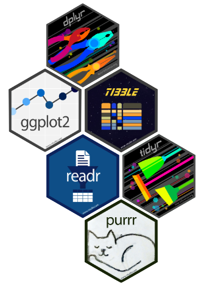

# Read dataset.
hiv <- read_csv("../data/at_health_facilities.csv")
## Q1: How many countries reported data?
## A1: 100 countries reported data.
length(unique(hiv$iso3))
## Q2: What is the difference between the minimum and maximum year with valid
## data for each country?
## A2: The difference set is the column `diff` below.
hiv %>%
filter(is.numeric(`age 15-17`) | is.numeric(`age 20-34`)) %>%
group_by(iso3) %>%
summarise(diff = max(year) - min(year))
## Q3: How many countries reported data in 3 or more years?
## A3: 34 countries.
hiv %>%
group_by(iso3) %>%
summarise(years_count = n_distinct(year)) %>%
count(years_count >= 3)
## Q4: Which countries reported 100% incidence for at least one year in either
## age group?
## A4: 18 countries.
hiv %>%
filter(`age 15-17` == 100 | `age 20-34` == 100) %>%
distinct(iso3) %>%
count()Tidyverse Certification
Sample Exam with Solutions
About the certification

The Tidyverse Certification is provided by RStudio and it attests to your pedagogical skills and knowledge of the Tidyverse ecosystem. To obtain the certification, the first step is to participate in a one-day training course that focuses on teaching methodologies. The second step is to pass two exams: a teaching exam and a Tidyverse exam. Below you will find solutions to the Tidyverse sample example provided by RStudio.
For more information on how to get certified, you can navigate to the trainers site.
Resources
Slides used by Greg during training: google drive.
RStudio Blog announcing the RStudio Tidyverse Certification: blog.
Official RStudio Instructor Training and Certification site: website.
Need help?
Reach out! I am a certified RStudio instructor for both the Tidyverse ecosystem and Shiny. There are other amazing trainers out there; check out the full list here.
Sample Exam
Instructions
This exam covers material from R for Data Science https://r4ds.had.co.nz/. If you have any questions about scope, please get in touch - we’d be happy to clarify.
You may use any books or online resources you want during this examination, but you may not communicate with any person other than your examiner.
You are required to use the RStudio IDE for this exam. You may use either the desktop edition or rstudio.cloud as you prefer.
You may do your work in an R script or an R Markdown file, and may use one for the whole exam or one for each question as your prefer. Whichever you choose, you must send your final work to the examiner by email upon completion of the examination.
Please let the examiner know when you finish each part of each question so that they can check your work.
Question 1
The file at_health_facilities.csv contains a tidy dataset with four columns:
- The ISO3 code of the country that reported data.
- The year for which data was reported.
- The percentage of HIV-positive children born to HIV-positive mothers age 15–17.
- The percentage of HIV-positive children born to HIV-positive mothers age 20–34.
Please answer the following questions:
- How many countries reported data?
- What is the difference between the minimum and maximum year with valid data for each country?
- How many countries reported data in 3 or more years?
- Which countries reported 100% incidence for at least one year in either age group?
Solution to Question 1
Question 2
A student has sent you the file rmd-country-profile.Rmd, which is an R Markdown document analyzing the data in at_health_facilities.csv for Bangladesh. They could not knit the file, and are providing you with the raw .Rmd file instead of a rendered file.
- Go through the file, fixing things that are preventing it from knitting cleanly.
- Change the two lines of bold text to H2-level headers to organize the document, and add a table of contents.
- Convert this R Markdown report for Bangladesh into a parameterized report with the country’s iso3 code as its parameter. Knit a new country profile for Egypt (ISO3 code “EGY”).
Solution to Question 2
There are four errors in the RMarkdown file:
- Line 3: Add missing
:tooutput, i.e., line 3 should readoutput:. Also, hit tab on line 4 since yaml is sensitive to identation. - Line 9: To set knitting options, use the
setfunction, i.e., line 9 should read:knitr::opts_chunk$set(echo = FALSE). - Lines 57 & 68: There are two chuncks with the same name
plot. You can fix this by changing the name of one of such chuncks or simply getting rid of the names completely. - Lines 60-62: The correct operator is
+instead of%>%.
- Line 3: Add missing
Change bold text of lines 15 & 46 by replacing
**to##. To add a table of contents, addtoc: TRUEto the yaml options at the top of the RMarkdown file. It should now look as follows.--- title: "Country Profile" output: html_document: theme: flatly toc: TRUE ---Add
paramsto the yaml options, specifying a variable name to store the country code:params: country_code: "BGD"and update
my_iso3 <- "BGD"(it should now be on line 39) to use this new variable, i.e.,my_iso3 <- params$country_code. To knit with a new parameter, you can go to the Knit dropdown in the IDE and click Knit with Parameters or alternatively, you can run the code below.rmarkdown::render("rmd-country-profile.Rmd", params = list( country_code = "EGY"))
The completely fixed RMarkdown is at data/fixed_rmd-country-profile.Rmd.
Question 3
You have been given a CSV file infant_hiv.csv that is formatted as follows:
- The first column is ISO3 country codes.
- There are three columns for each year from 2009 to 2017. Each set has estimated, low, and high values for the year (in that order).
- A dash
-indicates that no data is available. - Our analyst tells us that
>95%means “the data is unreliable”.
Your task is to turn this into a tidy data table for further analysis:
- Describe what columns a tidy layout for this data would have and why.
- Write a function that takes the name of a file containing this table as input and returns a tidy version of the table.
- The function should replace all
-and>95%values withNA. - The body of the function may contain one or more pipelines and may create temporary or intermediate variables, but may not contain any loops.
- The function should replace all
Solution to Question 3
An approach to have a tidy layout for our data is to collapse all the columns but ISO3 into three new columns
year,stats, andvalue. Thestatscolumn may contain the valueshi,low, orest.The function
tidy_dataimplements the approach on part 1.
tidy_data <- function(file){
# Read data.
raw_data <- read_csv(file)
# Tidy data by splitting the columns using a regex expression.
tidy <- raw_data %>%
pivot_longer(-ISO3,
names_to = c("year", "stats"),
names_pattern = "(.*) (.*)") %>%
mutate(value = case_when(
value == "-" | value == ">95%" ~ NA_character_,
TRUE ~ str_replace(value, pattern = "%", replacement = "")
))
# Return tidy data.
tidy
}
# Set data file name/location.
file <- "../data/infant_hiv.csv"
# Tidy data by calling the function we just created.
tidy_data(file)Question 4
The file ranking.csv contains two columns:
- The ID of an item being rated.
- A rating, which is one of “negative”, “positive”, “indifferent”, or “wtf” (meaning the respondent didn’t understand the question).
There are multiple ratings for each item. The plot below shows this data:
- Each dot represents one item i.
- The size of the circles shows the total number of ratings for item i.
- The X coordinate for item i is the percentage of ratings for that item that are “negative”.
- The Y coordinate for item i is the percentage of ratings for that item that are “positive”.
- The regression line is created using the ‘lm’ method.

Re-create this plot using the tidyverse and ggplot2, fixing any mistakes you notice along the way.
Solution to Question 4
# Read data.
raw_data <- read_csv("../data/ranking.csv")
# Tidy data to ease plotting.
rankings <- raw_data %>%
group_by(item) %>%
count(rank) %>%
pivot_wider(names_from = rank, values_from = n) %>%
mutate(num = sum(positive, negative, indifferent, wtf, na.rm = TRUE)) %>%
mutate_at(vars(-item, -num), .funs = list(~ round(./num, digits = 2)))
# Reproduce given plot.
ggplot(rankings, aes(x = negative, y = positive, size = num)) +
geom_point(aes(alpha = 0.25)) +
geom_smooth(method='lm')